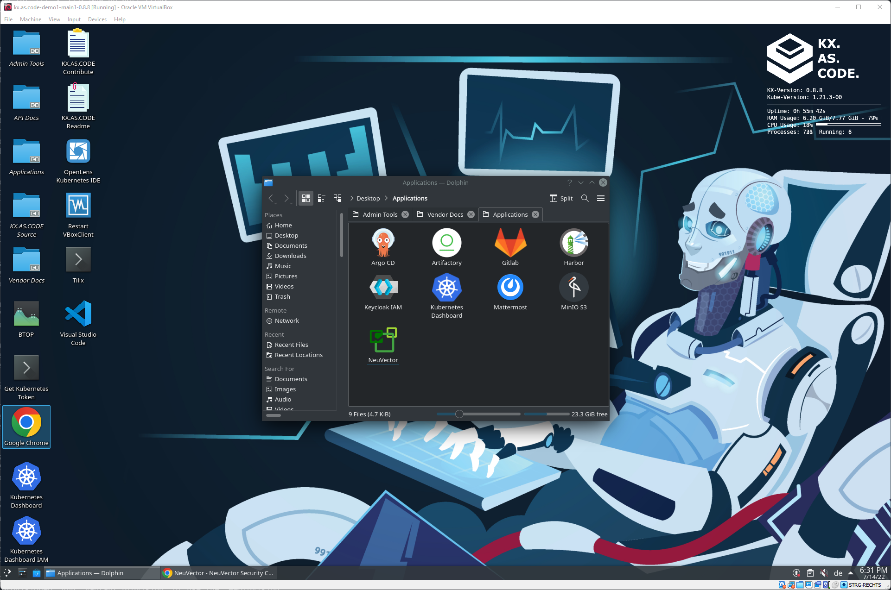

Adding a Solution#
Adding a new solution is straightforward.
First an important note, relevant regardless of the chosen installation method (eg. ArgoCD, Helm or Scripts).
Note
The configuration file, metadata.json, is absolutely mandatory for each component directory. This tells the KX.AS.CODE installation framework exactly what and how to install the application in question.
See the following guide that describes metadata.json in detail.
Below an example walk-through adding NeuVector as an application installed via the helm installation method.
Tip
Remember that there are many functions available that you can directly utilize in your scripts.
In particular for KeyCloak SSO integration, it is highly advisable to use the enableKeycloakSSOForSolution() function, as it takes care to call all the other needed functions.
Below a complete walk through for adding an application with helm. ArgoCD and Script based methods will also be covered, but in less detail. as the main flow is the same.
In summary, the example walk-through covers the following flow.
- Create your feature branch
- Determine target category for solution
- Determine install method
- Create the base directories.
- Populate the directory with the relevant files
- Create metadata.json and values_template.yaml
- Test the developed solution
- Check that the solution came up successfully
- Once fixed, move item to the restart queue
- Re-Test application
- Commit the code to GitHub.com
- Create pull request
Create your feature branch#
Start by creating a new feature branch from the develop branch. Remember that you will need a GitHub account to commit your changes afterwards.
cd /usr/share/kx.as.code/git/kx.as.code
git checkout develop
#git checkout -b feature/add-<name of application>-application
git checkout -b feature/add-neuvector-application
Determine target category for solution#
Current available categories are as follows.
| Category | Examples |
|---|---|
| cicd | Gitlab, TeamCity, Artifactory, Nexus3, Jenkins |
| collaboration | RocketChat, Mattermost, Jira, Confluence, WikiJs |
| dev_tools | BackStage, Atom, Postman |
| monitoring | Prometheus, Tick-Stack, Elastic-Stack, Loki-Stack, Netdata |
| quality_assurance | Selenium-Grid, SonarQube |
| security | BitWarden, NeuVector, Hashicorp Vault, Sysdig Falco |
| storage | Minio-S3, NextCloud |
Determine install method#
Current possibilities are ArgoCD, Helm or purely Script based. In future we will look to also enable deployment with Kustomize.
Create the base directories#
Populate the directory with the relevant files#
The number of scripts or screenshots will differ per solution per solution.
├── auto-setup
│ ├── security
│ │ └── neuvector
│ │ ├── post_install_scripts
│ │ │ ├── change_admin_password.sh
│ │ ├── pre_install_scripts
│ │ │ ├── create_certs_secret.sh
│ │ │ ├── create_service_account.sh
│ │ ├── screenshots
│ │ │ ├── neuvector_screenshot1.png
│ │ │ ├── neuvector_screenshot2.png
│ │ │ ├── neuvector_screenshot3.png
│ │ │ ├── neuvector_screenshot4.png
│ │ │ ├── neuvector_screenshot5.png
│ │ │ ├── neuvector_screenshot6.png
│ │ │ └── neuvector_screenshot7.png
│ │ ├── metadata.json
│ │ ├── neuvector.png
│ │ └── values_template.yaml
In NeuVector we created 7 screenshots. This may vary from solution to solution. The naming convention is important here, so that they are picked up by the KX-Portal.
Create metadata.json and values_template.yaml#
Best to copy the helm values file from the solution's GitHub repository and modify it to match the KX.AS.CODE environment.
In the example with NeuVector, we copied the default values.yaml, and modified it as per the solution's documentation.
For a simple solution, it is also possible to get away with only having the base directory and metadata.json, since it is possible to represent change to the Helm values file also in the form of a set_key_values block in metadata.json.
See the Solution Metadata documentation for Helm for more details on the possible parameters.
Taking the example for the values file added for NeuVector, the json in metadata.json would look as follows:
Tip
In the default NeuVector values.yaml file, the imageTag was 5.0.0. It's always worth to check in the source registry (in this case Docker Hub), to see if there is a new version available.
Word of caution, a minor version change is probably safe. Careful with updating to a new major version, as it may not be compatible with the helm chart.
For NeuVector, 5.0.1 was available. This was added to metadata.json and referenced in the values file, as you can see in the example below.
Example
First define the environment variable with the new version. This is relevant for both approaches, using either set_key_values[] or the values_template.yaml file, or a combination of both.
1 2 3 | |
Example metadata.json using inline Helm parameters with set_key_values[] block
1 2 3 4 5 6 7 8 9 10 11 12 13 14 15 16 17 | |
Example if using values_template.yaml
1 2 3 4 5 6 7 8 9 10 11 12 | |
Tip
Notice also the {{ mustache }} variables in the set_key_values[] block. These will also be replaced automatically with both global variables and those in metadata.json.
Warning
Important. As in the example, / must be escaped with a \
Note
The above snippet is just an example and doesn't represent all the changes made to the values file for NeuVector.
In this example however, we have chosen not to do use the inline set_key_values[] in metadata.json, and to create the values_template.yaml instead. See screenshot.
It is also possible to mix, and have both the JSON and the values file. As per Helm standard, the set_key_values[] will override those in the values file.
Notice in metadata.json the set environment variable imageTag, and how it is referenced in values_template.yaml as {{imageTag}}.
The KX.AS.CODE framework will automatically substitute the placeholder in values_template.yaml with the variable in metadata.json.
Info
For a full description on the configurable options in metadata.json, visit the Solution Metadata page.
Test the developed solution#
Once the initial development is done, publish the new solution to the message queue, in order to test it.
# In your case, don't forget to change the installation folder "security" and application name "neuvector" to whatever is relevant for your application
rabbitmqadmin publish exchange=action_workflow routing_key=pending_queue payload='{"install_folder":"security","name":"neuvector","action":"install","retries":"0"}'
Once the message is added to the pending_queue, you should get an installation started message.
Check that the solution came up successfully#
For demonstration purposes, this one failed. Open either the Kubernetes Dashboard, the OpenLens application, or use the kubectl CLI, to figure out what went wrong.
In our example, it was an incorrect setting on the pvc.
Once fixed, move item to the restart queue#
Go to the RabbitMQ admin folder on the desktop and open RabbitMQ.
Once open, go to Queues, and figure out if the message is in the failed_queue or wip_queue.
If on the failed_queue, enter that queue and move it to the retry_queue. The new attempt to install should start shortly after.
If on the wip_queue, use the GUI to move the message to the retry_queue. In this event, you will also need to restart the poller, as the old run will still be executing.
sudo systemctl restart kxAsCodeQueuePoller.service
Warning
In some cases it may be needed to also un-install the application before re-installing, if for example fixing a Kubernetes resource that is not changeable. This can be done with
helm uninstall <application name> --namespace <namespace>
Example
helm uninstall neuvector --namespace neuvector

Re-Test Application#
Once the installation is successful and all pods are green, check that the desktop icon has appeared in the Desktop's Applications folder with the correct icon and tha the page opens up correctly and is functional, eg. login works and there are no errors inside the application.

Commit the Code to GitHub.com#
You can also complete the actions in the VSCode built into the KX.AS.CODE VM, such as here, completing the final commit and push of the code, after creating the feature branch on the command line.
Create pull request#
Once committed, go to GitHub.com and create a pull request.
Someone from the core KX.AS.CODE development team will review your change and either approve and merge right away, or provide feedback on any required changes.
ArgoCD#
As with Helm, there are some ArgoCD specific parameters that need to be included in metadata.json.
Note
You must have installed ArgoCD before you can use this installation method
Tip
If you also install Gitlab, you can automatically push code there and use that as the source repo url reference. See the Grafana component for an example on how to do this. Here the two functions, createGitlabProject and populateGitlabProject, are used to achieve this.
For general information on ArgoCD, visit their docs site.
Most oof the steps are the same as for the Helm installation method, but here some additional information for steps 5 & 6.
5. Populate the directory with the relevant files#
In this scenario, instead of the values_template.yaml file, you should create a deployment_yaml directory, and place YAM files for all the resources you wish to create in there. See the following example.
6. Create metadata.json#
See the Solution Metadata documentation for ArgoCD, for more details on the possible parameters.
Note
See also the available functions for ArgoCD based installations here.
Scripts#
This is the easiest approach, as it does not require any specific configuration, such as those needed for Helm and ArgoCD to operate.
That said, consider the following points.
- You can also use this method to install files in
deployment_yamlwithout ArgoCD. Simply add the needed YAML files to this directory within your component's directory, and then call the deployYamlFilesToKubernetes() function in your main script. The function checks that the YAML is valid with kubeVal before applying.